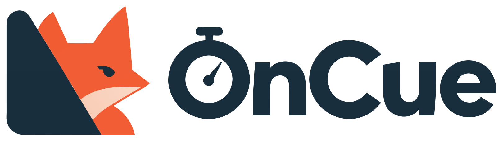
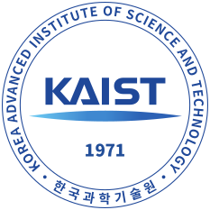
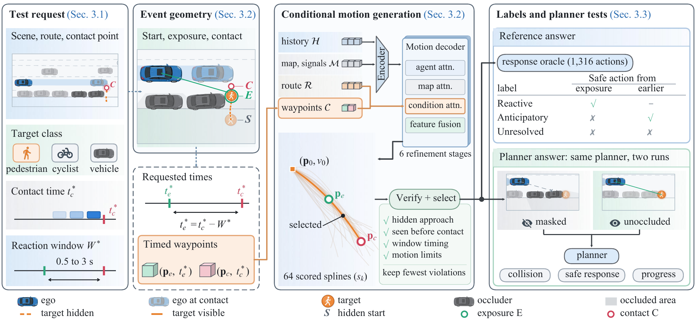

OnCue: Generating Safety-Critical Driving Scenarios
under Occlusion with Temporal Control
1Korea Advanced Institute of Science and Technology 2Giga 3The Chinese University of Hong Kong 4Nanyang Technological University
*Corresponding author

3 4TL;DR. OnCue inserts occluded pedestrians, cyclists, and vehicles into real driving logs with requested exposure and reference-contact times, labels whether each encounter is avoidable after exposure or only with earlier visibility, and uses the encounters to evaluate and improve planners.
Abstract
Occluded hazards challenge autonomous driving because visibility timing determines available avoidance actions. Existing scenario generators control hazard motion without jointly specifying exposure and reference-contact times. We propose OnCue, a framework that generates safety-critical encounters in real driving logs with these temporal conditions. Scene geometry provides hidden starts and timed waypoints for pedestrian, cyclist, and vehicle trajectory generation. An offline response oracle labels encounters as Reactive (avoidable after exposure) or Anticipatory (avoidable only with earlier visibility) and stores safe maneuvers as training demonstrations. On the Waymo Open Motion Dataset, 90.1–96.6% of valid trajectories meet both requested times within ±0.2 s. OnCue matches the requested reaction window between them in 92.8% of shared vehicle requests versus at most 42.1% for adapted adversarial generators. Across matched cyclist encounters, longer windows lower PDM-Closed collision from 59.1% to 5.5%, while the learned planner LatentDriver shows the opposite trend. OnCue demonstrations reduce LatentDriver target collision by 54.8 points on held-out Reactive tests, but reduce overall no-target progress by 12.7 m. These results highlight the value of temporal control for evaluating and improving planners under occlusion.
Contributions
- We propose OnCue, a framework for generating safety-critical driving scenarios under occlusion with temporal control. It enables systematic evaluation of planner responses as hidden hazards become visible earlier or later.
- We develop geometry-guided conditional trajectory generation, combining constructed hidden starts and timed waypoints with learned motion generation. A planner-independent response oracle labels available avoidance and stores executable demonstrations.
- We demonstrate how temporally controlled hazards support planner evaluation and adaptation. Closed-loop experiments across target classes and planners reveal how available reaction time affects driving behavior, and training with oracle demonstrations improves target avoidance.
Method

Key results
Temporal control
On the Waymo Open Motion Dataset, 90.1–96.6% of valid trajectories meet both requested times within ±0.2 s.
Generator comparison
OnCue matches the requested reaction window between them in 92.8% of shared vehicle requests versus at most 42.1% for adapted adversarial generators.
Generator comparison. OnCue achieves the highest window match, coverage, and masked PDM-Closed collision on 2,624 shared requests from 446 logs. Requests are selected from valid OnCue outputs. OnCue (rule) keeps its first candidate when none passes the hard checks (900 requests), so every method returns an output for each request. Blue shades mark the top three values across all rows, darkest first, with the best in bold.
| Controlled encounters | PDM-Closed | Motion quality | |||||||
|---|---|---|---|---|---|---|---|---|---|
| Method | W match (%) ↑ | Coverage (%) ↑ | Collision (%) ↑ | Adv. reward ↑ | Speed WD (m/s) ↓ | Accel. WD (m/s²) ↓ | Yaw-rate WD (rad/s) ↓ | Road edge (%) ↓ | BG contact (%) ↓ |
| CAT | 26.8 | 57.5 | 19.4 | 0.943 | 4.086 | 1.151 | 0.339 | 26.5 | 56.6 |
| KING | 42.1 | 57.3 | 12.0 | 0.707 | 4.033 | 2.014 | 0.352 | 25.2 | 48.1 |
| GOOSE | 38.9 | 47.2 | 9.2 | 0.576 | 3.753 | 0.939 | 0.284 | 30.2 | 49.0 |
| SEAL | 22.2 | 49.9 | 12.5 | 0.609 | 3.597 | 0.382 | 0.269 | 42.7 | 50.0 |
| SAGE (w = 0.5) | 11.6 | 22.9 | 8.7 | 0.478 | 2.979 | 1.165 | 0.305 | 20.4 | 43.6 |
| SAGE (w = 1.0) | 5.6 | 13.8 | 8.2 | 0.473 | 1.549 | 2.084 | 0.279 | 38.5 | 38.7 |
| OnCue (rule) | 81.7 | 86.7 | 22.9 | 1.076 | 2.691 | 0.848 | 0.343 | 0.9 | 54.5 |
| OnCue (model) | 92.8 | 92.6 | 34.1 | 1.333 | 2.935 | 0.993 | 0.283 | 3.9 | 45.7 |
WD compares generated motion with logged moving vehicles in the same scenes. BG: background. Adv. reward is against masked PDM-Closed. W match requires reference contact and a realized window within 0.2 s of W*. Coverage counts Reactive or Anticipatory tests. Task rates include skips, quality uses outputs, and reward uses completed runs. GOOSE uses SEAL's WOMD implementation. SEAL, GOOSE, and KING continue at constant velocity after early termination.
Response time separates planner behavior
Across matched cyclist encounters, longer windows lower PDM-Closed collision from 59.1% to 5.5%, while the learned planner LatentDriver shows the opposite trend.
| Planner | Situations | At 1 s (%) | Δ collision (pp) |
|---|
Planner adaptation
OnCue demonstrations reduce LatentDriver target collision by 54.8 points on held-out Reactive tests, but reduce overall no-target progress by 12.7 m.
Section 4 of the paper and Appendices D to F give every experiment.
Test cases
One test, two observation modes
Each scene runs one planner twice on the same final-set test: with masked observation, which knows the target only once the ego can see it, and with unoccluded observation, which knows it from the start. Both runs are replayed in the recorded log, as in the paper's closed loop. The five scenes are picked, not drawn: for each target type and construction family, among tests whose target recorded road users alone hide and that have no motion flaw, taken in a fixed random order, the first Anticipatory test where a planner hits the target under masked observation and, unoccluded, avoids it without touching anything else or leaving the road, using IDM-base whenever it qualifies. No Anticipatory vehicle test qualifies, so the vehicle scene is a Reactive test.
BibTeX
@article{oncue2026,
title = {OnCue: Generating Safety-Critical Driving Scenarios under Occlusion with Temporal Control},
author = {Ma, Kailang and Song, Li and Ren, Weining and Li, Zirui and Dai, Xianjie and Li, Jingguang and
Guo, Zuyi and Chen, Benwang and Huang, Heye},
journal = {arXiv preprint},
year = {2026}
}